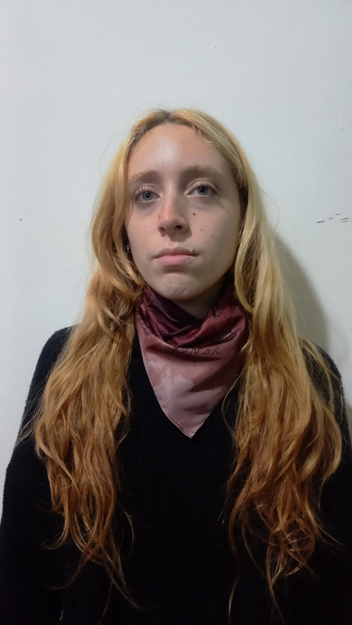
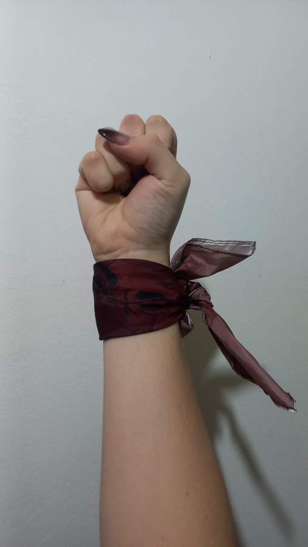
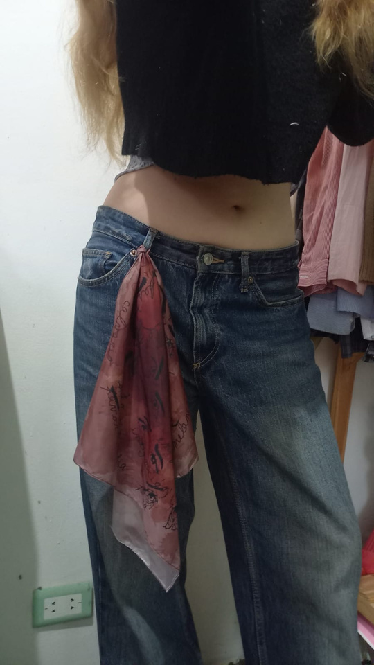
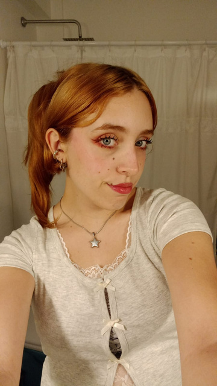

La propuesta del pañuelo
En el pañuelo se busca capturar, a través de las miradas, distintas emociones y reacciones generadas por el movimiento Ni Una Menos. La pieza trabaja con sentimientos como el enojo, el dolor y la desesperación.
Desde esa sensibilidad, el diseño intenta visibilizar la angustia que cargan las mujeres todos los días y los miedos que acompañan el simple hecho de salir a la calle.
Miradas y emociones
Las miradas funcionan como el eje expresivo de la composición. No aparecen como rostros completos, sino como fragmentos intensos que condensan vigilancia, dolor, alerta y memoria.
Las palabras escritas alrededor de la mancha acompañan esa carga emocional y refuerzan la idea de una experiencia colectiva, compartida y persistente.
Espiral, bucle y herida
La forma espiralada organiza los sentimientos dentro de un recorrido que vuelve sobre sí mismo. Esa estructura representa el bucle de violencia, miedo y tristeza, y cómo estas experiencias marcan a quienes las atraviesan.
La mancha aparece como una herida que persiste y no se puede borrar: un recordatorio de las mujeres que fueron arrebatadas y que no serán olvidadas.
Reflexión de la actividad
La actividad permitió profundizar en una temática que necesita ser abordada siempre que sea posible, yendo más allá de lo superficial para interiorizarse en problemáticas que siguen ocurriendo todos los días.
Las desapariciones de mujeres y niñas son una realidad dolorosa de la que todavía no se habla lo suficiente. Por eso, esta propuesta busca sostener una imagen que acompañe la reflexión y la memoria.
Galería del pañuelo






Propuesta realizada por Valentina Pampuri en el marco de Taller de Diseño Industrial III, orientación Textil, junto con el LAD (Laboratorio de Diseño).